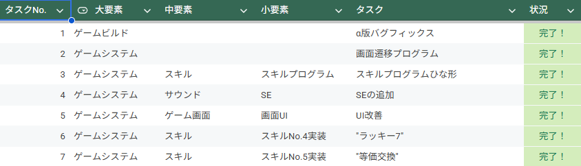
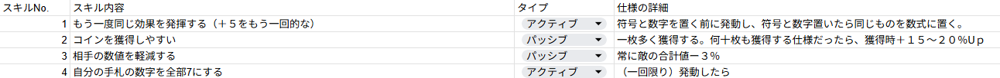

概要
「FormulaXTactics」は、専門学校3年の制作演習においてチームで開発した、数字カードと関数カードを使用して戦うカードゲーム（ターン制タクティカルカードバトル）です。
各プレイヤーは毎ターン数字カードと関数カードを交互に1枚ずつ場に出し、使用枚数が7枚になったときの計算結果を相手へのダメージとして与えます。
私は仕様設計および進行管理の担当として、企画されたゲームシステムを具体的な仕様書へと落とし込みました。さらに、そこから開発タスクを細分化してチームメンバーへ割り振るなど、プロジェクトマネジメント業務全般を主導しました。
使用技術
ゲームエンジン: Unity 2022.3 LTS
使用言語: C#
バージョン管理: Git / GitHub
主な役割
仕様書の構築
仕様書・ドキュメント作成にあたっては、「作成者が書きやすく、閲覧者が欲しい情報を即座に取り出せる設計」を意識して構成を設計しました。
具体的には、全体を俯瞰する「統合管理用タスク表」と、職種ごとの「個別タスク表」を用意し、これらを双方向に同期させる仕組みを構築しました。これにより、進行管理者は全体の進捗状況を容易に把握でき、作業者は自分自身のタスクへ集中して確認できる、効率的なタスク管理環境を実現しました。

メンバー全員が互いの開発状況を正しく把握し、目指すべきゴールを常に共有できるよう、週に数時間ある開発授業の時間は「情報共有と議論の場」として機能させました。
各メンバーの進捗を確認し合うだけでなく、不明点や技術的課題をその場で相談できる場を設けることで、トラブル発生時にもチーム全体で迅速にフォローし合える体制を整えました。
この経験を通じて、チーム開発における認識合わせの重要性と、効果的なコミュニケーションの取り方を深く学ぶことができました。
特徴
カードシステムの構築
カードをマウスドラッグで操作する際、手札から引き出すとカードが滑らかに拡大され、場に出し終えると縮小・配置される一連のUI演出を実装しました。これにより、直感的にカードを扱える、手触りの良い操作感を実現しました。
柔軟な効果設計を可能にする追加要素
特定のターン経過後に獲得できる「スキル」により、自分や対戦相手のカード数値、あるいは最終的な計算結果に対して多様な効果を与えるシステムを導入しました。
本作の核心である計算システムはプロトタイプ段階から高い完成度を誇っていましたが、一方で「一つのスキルがゲーム内の複数の要素へ動的に干渉する」ため、仕様の設計が極めて複雑になりました。実装タスクの細分化やアサインの方法に試行錯誤を重ねながら、粘り強くプロジェクトマネジメントを遂行しました。

各種ゲームシステム紹介
デッキビルディングシステム
何百種類ものカードの中から上限枚数でデッキを構成し、JSON形式でローカルデータに出出力・保存するシステムを設計。
UnityのUIシステム（ScrollRect）を高度にカスタマイズし、サクサクと検索・編成できる画面を作成しました。
ターンマネージャーとフェーズ遷移
「ドロー」「メイン」「バトル」「エンド」といった各フェーズの遷移を、状態マシン（Finite State Machine）パターンで完璧に整理。
割り込み効果やチェーン処理など、カードゲーム特有の複雑なイベント順序をバグなく制御しました。
シェーダーグラフによる未来エフェクト
UnityのShader Graphを活用し、カードがホログラムのようにノイズを走らせて出現するエフェクトや、攻撃時のデジタルグリッド波などを実装。
グラフィックのクオリティを最大限に引き上げました。